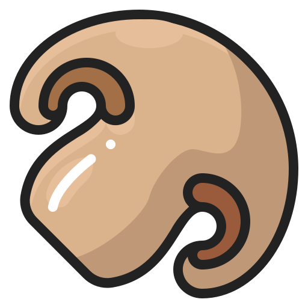

어릴 때부터 음식은 남기는 것이 아니라는 교육을 받아온 한국의 한 어린이 편식 이야기
7살, 유치원 식당에서 점심을 먹다 위기를 맞닥뜨리게 된다. 정체는 바로 초록 이파리에 연두색 줄기의 시금치! 어른들한테 칭찬받는게 좋고 예쁨받는걸 좋아하던 어린이. 음식을 남기면 행여나 혼이 날까, 그래도 이 시금치는 도저히 먹기 싫은데.. 혼자 깊은 고민에 빠지게 된다. 고민의 결과는 바로 시금치를 바닥에 버리고 다 먹은 척 하기! 하나씩 집어 바닥으로 떨어뜨린 척 하기로 한다. 누가 버렸는지 의심받지 않도록 나름 분산시켜 흩뿌린다.
미운 7살, 아니 요즘은 미친 7살이라던가. 시금치와 함께 양심도 조금 버리며 나의 첫 편식이 시작되었다.
편식은 날이 갈수록 까탈스러워져 버섯 중에서는 팽이버섯만 먹었다.
20살, 백화점 쇼핑 후 지하 푸드코트에서 버섯에 대한 내 철벽을 단번에 무너뜨리는 녀석을 만난다. 바로 주문한 음식 속에 슬라이스 되어 들어있던 표고버섯.
너무너무 맛있었다. 그동안 분명 제일 싫어했던 버섯인데 어떻게 그렇게 말캉말캉한 식감인지! 그 후로 버섯에 완전히 빠져버려서 한참동안 노루궁뎅이버섯, 새송이버섯, 느타리버섯 등등 온갖 버섯을 넣고 버섯찌개를 끓여 먹었고, 현재 마라탕에는 백목이버섯을 꼭 넣어 먹는 편!
가지. 가리는 음식 없이 다 잘 먹는 사람들 중에서도 기피자가 많은 음식. 채소가 싫어서 고기 먹을 때도 쌈을 안 싸먹는 사람이 가지를 먹어봤을리가. 시도할 생각조차 안해봤었다.
이 철벽을 뛰어넘은 건 단골로 가던 양꼬치 가게의 지삼선. 늘 같이 가던 친구가 진짜 맛있다고 제발 하나만 먹어보라고 갈 때마다 부탁을 해서 10번째 방문했을 즈음, 제일 작은 조각을 집어 개미만큼 깨물어 먹어봤다. 식감은 버섯과 비슷했고 소스가 있어 싫어하는 채소 고유의 맛이 안 느껴져 꽤나 괜찮았다. 그렇게 가지와 꽤나 괜찮게 첫 인사를 했다.
그리고 23살, 프랑스 여행에서 두 번째 가지 요리를 맞닥뜨리게 된다. 같이 간 친구가 아파 혼자 저녁을 먹으러 나섰다. 생선요리를 주문했고 사이드로 썬드라이토마토와 버섯을 잘게 잘라 섞은 듯한 것이 플레이팅 되어 나왔다. 버섯보다 좀 더 흐물거리는 형태였지만 버이라 믿기로 마음 먹고 의심은 살짝 접어둔 채 (심지어)기대하며 한 입 먹었다. 아뿔싸. 가지였다. 가지에 대한 마음은 좀 열려있었으나 내 손으로 즐겨 먹는 단계는 아니었는데… <가지>라는 이름 자체에 대한 거부감으로 안 먹고 싶은 마음이 굴뚝같았다. 하지만 점원 분들이 너무 친절히 챙겨주셨고 사실 전부 다 맛있었기 때문에 혹시나 맛없어서 남긴 것으로 오해하는 일이 없게 하고 싶었다.
이번에는 다 먹었다. 무려, 가지를.
나이가 들면 입맛이 바뀐다는데, 편식이 개선되는 정도로 나이 들고 있음을 체감하고 있다. 사실 지금도 여전히 김밥에 오이와 시금치와 깻잎은 빼고, 과일 중 참외는 여전히 먹지 않고, 볶음밥에 피망이나 파프리카는 어떻게든 빼고 먹는다. 하지만 이제는 단호박 스프도 먹을 줄 알고, 깨작대며 먹지만 배와 수박 그리고 메론도 먹긴 한다.
앞으로 10년 뒤에는 어떤걸 안먹고 어떤걸 좋아하게 되려나.